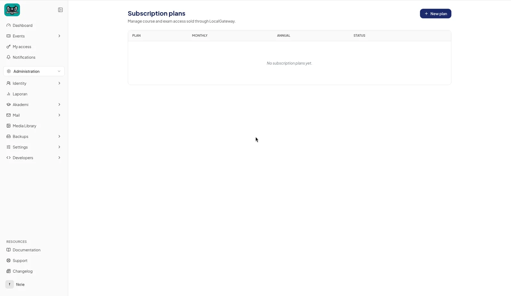
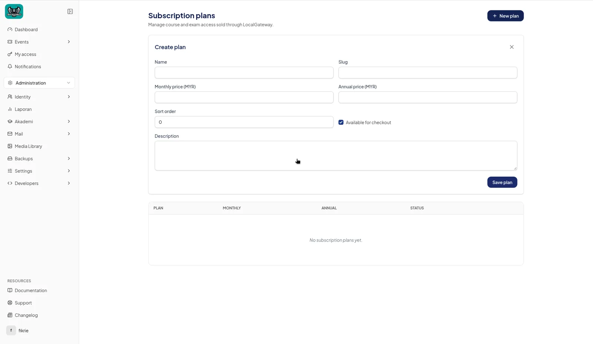

How to create a plan
Subscription plans control paid access to courses and exam pathways.
You need an Administrator or Superadmin role. The Plans menu only appears when enrollment is enabled for your platform. If you can't see it, contact your platform administrator.
1. Open Subscription plans
- In the left sidebar, open Administration › Plans.
- The Subscription plans page lists your existing plans.

2. Create the plan
- Click New plan. The Create plan form opens on the page.
- Fill in the fields:
Field What to enter Name Required. The plan name your customers see. Slug Optional. A short web-friendly ID. Leave it blank to create one from the name automatically. Each slug must be unique. Monthly price (MYR) Price per month, at least 0.01. Annual price (MYR) Price per year, at least 0.01. Sort order A whole number, 0 or higher. Lower numbers are listed first. Available for checkout Ticked: customers can buy the plan. Unticked: hidden from checkout. Description Optional, up to 5000 characters. Enter at least one price (monthly, annual, or both). All prices are in Malaysian Ringgit (MYR). - Click Save plan. You'll see "Plan saved." and the plan appears in the table with its prices and status (Active or Archived).

3. Edit, archive or delete a plan
- Edit: click the edit icon on the plan's row.
- Archive: click the archive icon and confirm. New checkouts stop, but customers who already paid keep access until their paid period ends. To make it available again, edit the plan and tick Available for checkout.
- Delete: click the trash icon, type the plan name exactly in the Padam window, and click Padam.
A plan with active subscribers can't be deleted. You'll see "Pelan ini masih mempunyai pelanggan aktif." Archive it instead.
Next step
To make a plan unlock a pathway, link it in the pathway builder. See How to create a subject pathway.